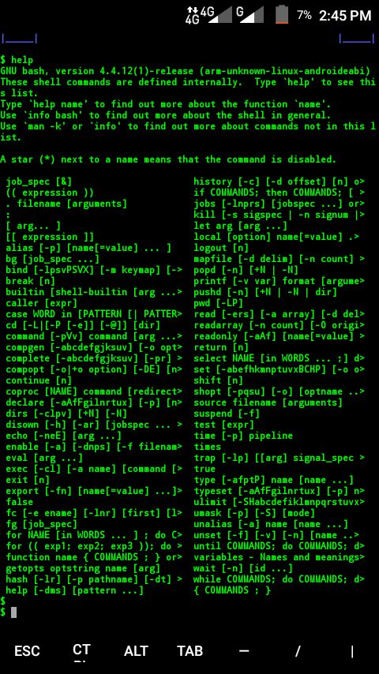

🚀 Centro Matemático Interactivo
Explora problemas reales usando matemáticas
Matemáticas aplicadas al mundo real
Este sistema interactivo demuestra cómo los algoritmos matemáticos pueden utilizarse para resolver problemas reales relacionados con crecimiento poblacional, ahorro progresivo, seguridad informática y análisis de patrones numéricos.
A través de simulaciones visuales y formularios dinámicos, el usuario podrá comprender cómo funcionan la serie Fibonacci y los números primos dentro de diferentes contextos de la vida cotidiana.
Fibonacci
Modela crecimiento natural y patrones matemáticos.
Números primos
Fundamentales para la seguridad informática moderna.
Simulaciones
Resultados visuales dinámicos e interactivos.
Fibonacci en Crecimiento Poblacional
Simulación del crecimiento de una población de conejos usando la serie Fibonacci
Contexto del problema
El problema de los conejos en la serie de Fibonacci busca modelar cómo crece una población de conejos en condiciones ideales.
Se parte de una sola pareja de conejos jóvenes que, después de un mes, se convierten en una pareja adulta capaz de reproducirse. Cada pareja adulta produce una nueva pareja cada mes.
El objetivo es determinar cuántas parejas habrá en cada mes siguiendo un patrón de crecimiento basado en la suma de las dos generaciones anteriores.
¿Cómo funciona el código?
-
1
Se inician variables
a = 1yb = 1 -
2
En cada iteración se calcula
c = a + b -
3
Se actualiza
a = byb = c
let a = 1, b = 1, c;
for (let i = 2; i < n; i++) {
c = a + b;
a = b;
b = c; // variables simples
}Formulario de Entrada
Ingresa los datos para la simulación del crecimiento de la población de conejos.
Suposiciones del modelo
- ✔ Cada pareja tarda 1 mes en madurar
- ✔ Cada pareja produce otra pareja
- ✔ La población nunca disminuye
- ✔ El ambiente tiene recursos ilimitados
Resultado de la Simulación
Así crece la población mes a mes
0
Conclusión
La serie Fibonacci es una herramienta poderosa para modelar el crecimiento natural de poblaciones.
Este tipo de patrones aparece en:
- 🌱 Naturaleza
- 📈 Economía
- 🧬 Biología
- 💻 Simulación computacional
Fibonacci en Crecimiento Financiero
Simulación inteligente de ahorro progresivo utilizando la serie Fibonacci aplicada a estrategias financieras modernas.
📈
Crecimiento💰
Ahorro Inteligente🚀
ProyecciónContexto del problema
El desafío del ahorro basado en la serie de Fibonacci busca modelar una estrategia de disciplina financiera donde el hábito de guardar dinero crece orgánicamente.
Se parte de una base de depósito preestablecida. Cada mes el compromiso aumenta, obligando al ahorrador a aportar una cantidad equivalente a la suma de los dos meses anteriores. Esto genera un crecimiento acelerado del fondo.
El objetivo es determinar la viabilidad de la estrategia a mediano plazo, proyectando el impacto total acumulado y evaluando el esfuerzo financiero requerido en las fases avanzadas de la serie.
¿Cómo funciona el código?
Se inicializan los depósitos de los meses iniciales: a = base y b = base
En cada iteración mensual se calcula el nuevo aporte: deposito = a + b
Se actualizan los registros históricos para el siguiente ciclo: a = b y b = deposito
let a = base, b = base, deposito;
for (let i = 3; i <= meses; i++) {
deposito = a + b;
a = b;
b = deposito;
totalAcumulado += deposito;
}Planificador de Ahorro
Configura los parámetros para proyectar tu crecimiento financiero basado en la secuencia.
Reglas del Planificador:
- ✓ El mes 1 y mes 2 inician con el depósito base.
- ✓ A partir del mes 3, el aporte es la suma de los dos meses previos.
- ✓ El simulador calcula el interés compuesto implícito acumulado.
Proyección del Fondo
Historial de depósitos y crecimiento acumulado mes a mes
Ingresa los datos para generar el estado de cuenta proyectado.
Conclusión del Análisis Financiero
La serie Fibonacci demuestra cómo una estrategia de ahorro progresivo puede generar un crecimiento financiero acelerado con el paso del tiempo.
Aunque los primeros depósitos parecen pequeños, el incremento acumulativo permite observar cómo el capital aumenta de manera significativa en los meses posteriores.
Este modelo matemático ayuda a comprender la importancia de la disciplina financiera y la constancia en los planes de ahorro a largo plazo.
Seguridad Digital con Números Primos
Simulación interactiva de criptografía RSA utilizando algoritmos matemáticos basados en números primos para validar seguridad digital.
> Iniciando protocolo RSA...
> Escaneando integridad matemática...
> Verificando número primo...
✔ Sistema criptográfico listo
¿Por qué existe RSA?
La criptografía RSA nace por la necesidad de proteger información privada en internet.
Bancos, redes sociales, sistemas militares y plataformas digitales utilizan algoritmos basados en números primos para cifrar información.
La dificultad matemática de factorizar números primos gigantes permite garantizar la seguridad de los datos.
🔐
Cifrado🛡️
Seguridad⚡
RSA¿Cómo funciona?
Se evalúa si el número es menor o igual a 1.
Se buscan divisores desde 2 hasta $\sqrt{n}$.
Si no existen divisores intermedios, el número es primo.
function esPrimo(n){ for(let i=2; i<=Math.sqrt(n); i++){ if(n%i==0){ return false; } } return n > 1; }
Formulario de Entrada
Ingresa una clave numérica para analizar su integridad criptográfica.
🧠 Reglas del Analizador
- ✔ Debe ser entero positivo
- ✔ Se analiza primalidad
- ✔ Optimización matemática $\sqrt{n}$
Consola de Diagnóstico RSA
Primalidad: Pendiente
Complejidad ($\sqrt{n}$): Sin evaluar
Nivel de Seguridad: Bloqueado
Esperando validación criptográfica
Introduce una clave en el formulario de la izquierda para desplegar el reporte estructural del sistema.

Sucesión Híbrida de Fibonacci y Primos
Filtrado cuántico y análisis de primalidad sobre la secuencia de crecimiento áureo
La intersección de Fibonacci y los números primos revela patrones ocultos de alta eficiencia energética y espirales lógicas utilizadas en criptografía avanzada.
El desafío consiste en identificar aquellos eslabones de la cadena de Fibonacci que conservan la propiedad de la invisibilidad aritmética (ser primos).
Mientras que Fibonacci modela la expansión natural y el crecimiento orgánico, los números primos actúan como los átomos numéricos indivisibles de las matemáticas.
El objetivo es rastrear y aislar computacionalmente estos extraños puntos de convergencia pura donde la naturaleza geométrica choca directamente con la seguridad informática moderna.
¿Cómo funciona el código?
- 1 Se genera el elemento tradicional sumando los dos valores previos ($F_n = F_{n-1} + F_{n-2}$).
- 2 Se extrae el valor y se inyecta a un bucle de descarte por raíz cuadrada ($\sqrt{n}$).
- 3 Si el número es divisible únicamente por 1 y por sí mismo, es primo.
function analizarHibrido(n) {
for(let i = 2; i <= Math.sqrt(n); i++) {
if(n % i === 0) return false;
}
return n > 1;
}Ingresa las coordenadas límites para la generación de la secuencia mixta.
Condiciones de control
- El primer elemento se inicializa en la base estable ($F_0=0$).
- Se aplica descarte radical continuo para evitar latencia.
- El entorno web procesa la pila en microsegundos.
Evolución de la secuencia filtrada elemento por elemento:
La combinación de ambas teorías demuestra que las estructuras de crecimiento naturales no son completamente caóticas; contienen puntos de seguridad rígidos que permiten modelar infraestructuras digitales de alta fidelidad y criptografía simétrica natural.
Conclusión
Las matemáticas ayudan a resolver problemas reales en crecimiento, ahorro y seguridad informática. La serie de Fibonacci no es solo una curiosidad matemática — es un modelo del crecimiento real. Aparece en la disposición de semillas de girasoles, el número de pétalos de flores, la reproducción de colonias de abejas y hasta en análisis financiero. Programar su generación nos enseña a pensar en términos de patrones iterativos.
Los números primos son la base de la criptografía moderna. Cada vez que realizas una compra en línea, tu información es protegida usando el algoritmo RSA, que depende de que factorizar productos de números primos grandes es computacionalmente difícil. Verificar primos enseña el concepto de divisibilidad y seguridad matemática.
Combinar ambos conceptos revela una pregunta abierta en matemáticas: ¿existen infinitos primos de Fibonacci? Actualmente se conocen muy pocos. Esta herramienta permite explorar esa frontera del conocimiento matemático de forma interactiva y visual.